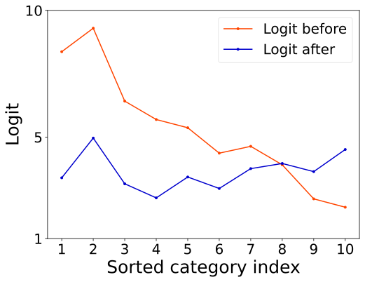

Information
- Title: Margin Calibration for Long-Tailed Visual Recognition
- Author: Yidong Wang, Bowen Zhang, Wenxin Hou, Zhen Wu, Jindong Wang, Takahiro Shinozaki
- Institution: 东京工业大学(Tokyo Institute of Technology)、Microsoft STCA、南京大学，微软亚研院
- Year: 2022
- Journal: ACML
- Source: Arxiv
- Cite: Wang Y, Zhang B, Hou W, et al. Margin calibration for long-tailed visual recognition[J]. arXiv preprint arXiv:2112.07225, 2021.
- Idea: 提出校正边距的方法来提高长尾分布的性能
1 | @article{wang2021margin, |
Abstract
现有的长尾识别多数更加关注数据重采样和损失函数的优化，这篇文章提出了一个新的方向：分类边距。作者研究了边距与预测分数的关系并发现未校正的边距与预测分数是正相关的，以此提出了 MARC(Margin Calibration) 方法来校正边距
Introduction
所谓长尾分布，即不同类别的样本数据不均衡，头部样本数量多性能好，尾部样本数量少性能比头部类差很多。解决长尾分布的常用方法是数据重采样和损失函数工程。数据重采样试图让训练数据均衡即对头部数据下采样和对尾部数据上采样，而损失重加权引入自适应加权损失来平衡不同类。为了平衡类间梯度，一些损失函数会通过调整预测分数来替代对损失加权的方法。但前面这些方法有研究指出会导致比较差的数据表征。
有研究表面，边距和预测分数对分类性能有显著影响，而未校准的边距和预测分数之间的关系一直被忽略，其中边距(margin) 是指数据点和决策边界的距离。如图所示，实验表明每个类的预测分数和边距是有相关性的，即头部类相比起尾部类有更大的边距和预测分数，因此有必要校准边距来获得平衡的预测分数。而最后一幅图显示未校准的边距和预测分数对于分类性能是有负面影响的。
 

针对校准偏移的边距，这篇文章提出了MARC 边距校准方法。即使用一个简单的类特定校准函数来调整初始学习到的边距，参数量仅分类数量的两倍。上图显示了使用MARC 校准后的结果。
这篇文章的贡献如下：
- 在长尾识别领域首先基于边距方面研究了为校正与预测的关系，实验性的验证了未校正边距会降低预测准确率，这指导了算法的设计
- 基于观察，提出了边距校正(MARC)方法，简单有效，参数量小
- 三行代码实现，效果 SOTA
Method
Preliminaries
用 𝒟 = {(xi, yi)}i = 1n 表示训练集，其中 yi 表示输入样本 xi 的表标签。记 $n = \sum_{j=1}^K n_j$ 为训练样本的总数，其中 nj 是其中一个类 j 的数量， K 表示类别总数。我们假设有 n1 > n2 > ⋯ > nK 。
模型包含两个部分：特征提取器 f : x ↦ z （参数为 θr ）和分类器 g : z ↦ y （参数为 θc ），其中 z ∈ ℝp 表示提取的特征， p 是特征的维度。
g 对于类别 j 给出的分类分数为: ηj = g(z) := Wjz + bj
而样本对于标签的概率为： $$ p(y=y_i|\mathbf{x}_i;\theta_r,\theta_c) = \frac{\exp(\eta_{y_i})}{\sum_{j=1}^K \exp(\eta_j)} $$ 损失函数 $$ \ell(\mathbf{x}_i, y_i;\theta_r,\theta_c) = -\log \left(\frac{\exp(\eta_{y_i})}{\sum_{j=1}^K \exp(\eta_j)} \right) $$ ### Margins
下图展示了未校准的边距，即 z1在超平面Hj ∈ ℝp − 1（Wjz + bj = 0） 的投影点到 z1 的距离 projWj(z1 − z0) 其中 z0 是超平面上一点
具体计算为： $$ \begin{split} d_j & = \left\Vert proj_{ \mathbf{W}_j }(\mathbf{z}_1 - \mathbf{z}_0) \right\Vert \\ & = \left\Vert \frac{ \mathbf{W}_j \cdot (\mathbf{z}_1 - \mathbf{z}_0)}{\mathbf{W}_j \cdot \mathbf{W}_j} \mathbf{W}_j \right\Vert \\ & = \frac{\mathbf{W}_j \cdot \mathbf{z}_1 - \mathbf{W}_j \cdot \mathbf{z}_0 }{\Vert \mathbf{W}_j \Vert } \\ & =\frac{\mathbf{W}_j \mathbf{z}_1+\mathbf{b}_j}{\Vert \mathbf{W}_j \Vert} \quad (\text{since} \ \mathbf{W}_j \mathbf{z}_0 + \mathbf{b}_j = 0), \end{split} $$ 其中 ‖⋅‖ 表示 L2 范数. 因此, 预测分数概率 Wj ⋅ z1 + bj 可以表示为 ‖Wj‖dj，预测概率可以写为： $$ p(y=y_i|\mathbf{x}_i;\theta_r,\theta_c) = \frac{\exp(\eta_{y_i})}{\sum_{j=1}^K \exp(\eta_j)} = \frac{\exp(\Vert \mathbf{W}_{y_i} \Vert d_{y_i})}{\sum_{j=1}^K \exp(\Vert \mathbf{W}_j \Vert d_j)} $$ 我们的目标是让多样本类 j 和少样本类 t 分类概率接近，可以假设： ηj = ηt = ‖Wj‖dj = ‖Wt‖dt 当 ‖Wj‖ = ‖Wt‖ 时有 dj < dt. 此外实验中也观察到头部类比起尾部类更倾向于有大的边界和预测分数： $$ \begin{split} & \bar{d}_1 > \bar{d}_2 > \cdots > \bar{d}_K, \\ & \bar{\eta}_1 > \bar{\eta}_2 > \cdots > \bar{\eta}_K, \\ & \text{if} \quad n_1 > n_2 > \cdots > n_K, \end{split} $$ d̄j 和 η̄j 分别表示平均边距和预测分数。
MARC
作者提出的 MARC 是对原始边距的修正： $$ \hat{d_j} = \omega_j \cdot d_j + \beta_j $$ 其中 ωj 和 βj 是针对类 j ∈ [1, K] 的可学习参数。 边距预测分数的计算为: $$ \begin{split} \Vert \mathbf{W}_j\Vert \hat{d_j} &=\Vert \mathbf{W}_j\Vert ( \omega_j \cdot d_j + \beta_j)\\ & = \omega_j \cdot \Vert \mathbf{W}_j\Vert d_j + \beta_j \cdot \Vert \mathbf{W}_j\Vert \\ & = \omega_j \cdot \eta_j + \beta_j \cdot \Vert \mathbf{W}_j\Vert, \\ \end{split} $$ ηj 是初始固定的预测分数。校准过的预测概率分布为： $$ p(y=y_i|\mathbf{x}_i;\theta_r,\theta_c) = \frac{\exp(\omega_{y_i} \cdot \eta_{y_i} + \beta_{y_i} \cdot \Vert \mathbf{W}_{y_i}\Vert)}{\sum_{j=1}^K \exp(\omega_j \cdot \eta_j + \beta_j \cdot \Vert \mathbf{W}_j\Vert)}. $$ 具体算法如下：

为了平衡训练时的梯度，作者将损失函数调整为： $$ \ell(\mathbf{x}_i, y_i;\tilde{\theta}_r,\tilde{\theta}_c,\omega,\beta) = - U_{y_{i} } \cdot \log \left(\frac{\exp \left(\omega_{y_i} \cdot \eta_{y_i} + \beta_{y_i} \cdot \Vert \mathbf{W}_{y_i}\Vert \right)}{\sum_{j=1}^K \exp(\omega_j \cdot \eta_j + \beta_j \cdot \Vert \mathbf{W}_j\Vert)} \right), $$ 其中 $_r $ 和 θ̃c 在训练过程中冻结. 分类权重 yi 用下式计算: $$ U_{y_i} = K \cdot \frac{(1/n_{y_i})^\gamma}{\sum_{j=1}^K(1/n_j)^\gamma } $$ γ 是一个超参数，γ 为 0 表示所有类的权重都是 1 ，即没有做任何调整
下面是几种分类边界调整方法的对比
Detail
Experiment
简单看看：
- 数据集：CIFAR-10-LT, CIFAR-100-LT, ImageNet-LT, Places-LT, iNaturalist2018
- 模型：ResNet32, ResNeXt50, ResNet152, ResNet50.
- 总的来说对少数类的分类性能有显著改进，但对多数类的分类性能还是不可避免有所损害的
Conclusion
这篇文章研究了长尾分布中分类准确率与边界、预测分数的关系，并提出了边距校正来改进少数类的分类性能。
本文研究了长尾视觉识别问题。具体来说，我们发现头类往往比尾类具有更大的边距和预测分数。受此发现的启发，我们提出了一个只有 2K（K是类别数）可学习参数的边距校准函数，以获得长尾视觉识别中的平衡预测分数。尽管我们的方法实现起来非常简单，但大量实验表明，与以前的方法相比，MARC在不改变模型表示的情况下取得了有利的结果。我们希望我们对预测分数和边距的研究能够为模型表示和边距校准的联合优化提供经验。未来，我们的目标是发展一个统一的理论来更好地支持我们的算法设计，并将该算法应用于更多的长尾应用[1]。
References
如果对你有帮助的话，请给我点个赞吧~
欢迎前往 我的博客 查看更多笔记